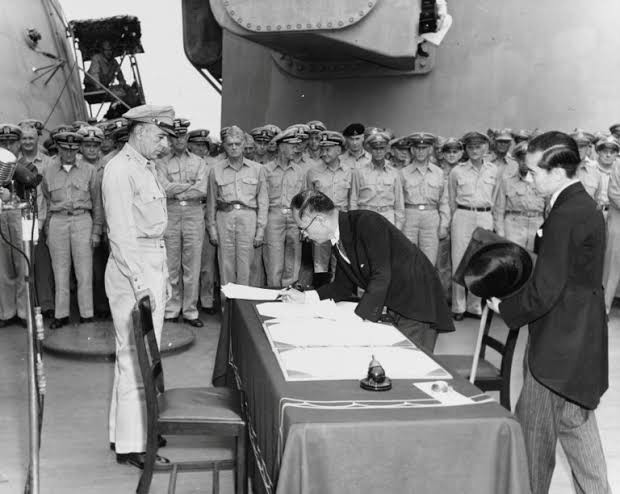

สงครามโลกครั้งที่ 2

สงครามโลกครั้งที่ 2 เกิดขึ้นระหว่าง ค.ศ. 1939–1945 เป็นสงครามที่มีประเทศต่าง ๆ เข้าร่วมเป็นจำนวนมาก สาเหตุสำคัญมาจากความขัดแย้งหลังสงครามโลกครั้งที่ 1 การขยายอำนาจของเยอรมนี อิตาลี และญี่ปุ่น รวมถึงการรุกรานประเทศต่าง ๆ สงครามสิ้นสุดลงด้วยชัยชนะของฝ่ายสัมพันธมิตร และส่งผลให้เกิดการเปลี่ยนแปลงทางการเมือง เศรษฐกิจ และความสัมพันธ์ระหว่างประเทศทั่วโลก